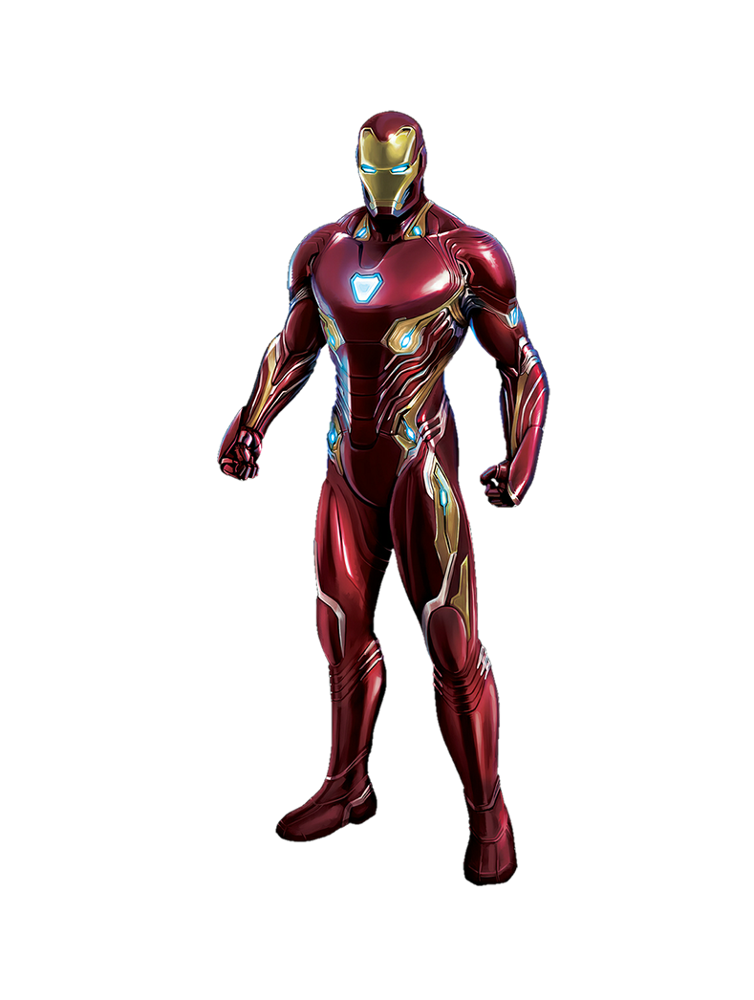

Vasember
Tony Stark egy multimilliárdos iparmágnás, feltaláló és playboy, a Stark Industries tulajdonosa, mely az Egyesült Államok egyik legnagyobb hadifelszerelés-beszállítója. Stark anyagi hátterét és a gépészetben való magas fokú jártasságát felhasználva alkotta meg a Vasember-páncélok több generációját. Az eredetileg antikommunista hős, Amerika páncélos védelmezője az idők során jóval összetettebb, sebezhetőbb személyiséggé alakult, akinek nemcsak az Államokat fenyegető külső ellenséggel, hanem az alkoholizmussal is meg kellett küzdenie.